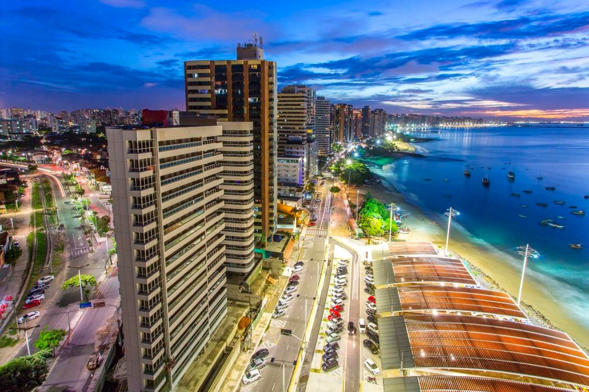

15 de agosto de 1990
De onde eu venho...

Sou natural da cidade de Fortaleza - CEARÁ, que está lozalizada na Região do Nordeste, mais conhecida como Terra do Sol. Terra de vários artistas cearenses como Belchior, Chico Anysio, José de Alencar, Rachel de Queiros e muitos outros. Uma das cidades mais bela do país, com lindas praias, e uma cultura muito forte.